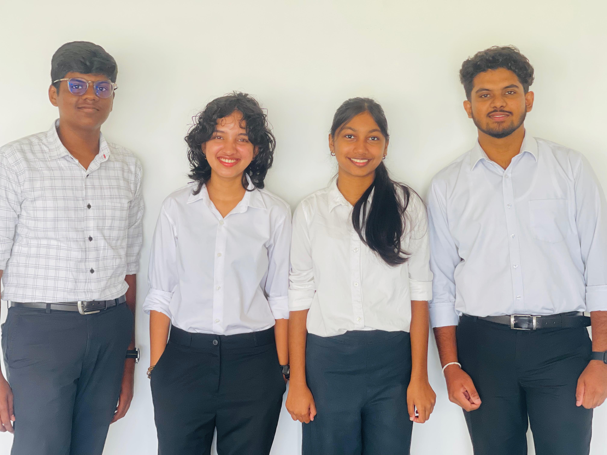

ASSESSMENT PORTFOLIO
S.K. SAMARASINGHE
MODULE
SC1153: Introduction to Biotechnology
INSTITUTION
Sri Lanka Institute of Information Technology Malabe
BATCH & INTAKE
Batch 11.1 | October 2025
IDENTIFICATION
HS25510551
Abstract
The Introduction to Biotechnology module (SC1153) provided a comprehensive bridge between theoretical science and its practical, ethical, and professional applications. This portfolio documents a progression of five key assessments , ranging from group analyses of biotechnology sectors to the creation of digital media showcasing new innovations. These collaborative projects were instrumental in developing strong interpersonal skills, requiring effective coordination and collective problem-solving, while the video production tasks significantly enhanced my digital and media literacy by challenging me to communicate complex technical concepts through modern platforms. The module further sharpened my critical thinking and bioethical reasoning through a formal debate on the ethical implications of biotechnological advancements. Finally, the individual career mapping and the strict adherence to submission protocols and deadlines have instilled a high degree of professional discipline and time management. Collectively, these experiences have provided a robust foundation for my future trajectory within the biotechnology industry.
Acknowledgements
I would like to express my sincere gratitude to everyone who supported me throughout the Introduction to Biotechnology (SC1153) module. This portfolio is a result of not only my individual effort but also the guidance and encouragement provided by several key individuals.First and foremost, I am deeply grateful to the module leader, Mr. Shanitha Mirihana, and the distinguished lecture panel, including Prof. Colin N. Peiris, Dr. Dhanushka Udayanga, Dr. Jagath Kasturiarachchi, Dr. Ruvini Mathangadeera, Ms. Chathurangi Pathirana, and Dr. Nirosha Priyadarshani. Their expertise, insightful lectures, and dedication to our learning have been fundamental in shaping my understanding of the biotechnology landscape. I would also like to extend my thanks to my group members for their collaboration and synergy during our collective projects, as well as my batch mates for the shared discussions and mutual support that made this semester a rewarding experience.Finally, I am incredibly thankful to my parents, siblings, and friends. Their unwavering encouragement and belief in my goals provided the motivation necessary to complete this module and compile this portfolio with diligence and care.
Assignment Objectives
Areas of Biotechnology applications in the world
The primary objective of this assignment was to design an engaging educational presentation that simplified complex biotechnological applications for a school-age audience. It aimed to foster a deep understanding of a specific assigned sector of biotechnology while developing professional public speaking, slide design, and collaborative group skills.
Introduce an exciting new product developed using Biotechnology
The primary objective of this assignment was to communicate a complex biotechnological innovation to the general public through a structured 10-minute video presentation. It aimed to enhance technical research skills while developing digital literacy, individual presentation vigor, and the ability to synthesize collaborative media content.
Career Trajectory in Biotechnology
The primary objective of this assignment was to explore potential career pathways in biotechnology by researching the professional journey of an inspirational role model. It aimed to provide practical insights into the knowledge, skills, and milestones required to design a personalized career trajectory with clearly defined short-term, medium-term, and long-term goals.
Round Table Discussion on Ethical Issues in Biotechnology
The primary objective of this assignment was to move beyond laboratory science and engage with the legal and ethical frameworks that govern biotechnological advancements. By adopting a specific stakeholder persona, the task aimed to develop skills in ethical reasoning, scientific justification, and the ability to represent complex interests in a moderated policy-making environment.
01.Areas of Biotechnology applications in the world
Description:
Working within a structured group, I contributed to a 10-minute PowerPoint presentation specifically focused on Gold Biotechnology, where we explored the innovative intersection of nanotechnology and bioinformatics. The project required us to develop a creative title and curate high-impact, interesting information—such as how computational tools and nano-scale materials are revolutionizing biological data—designed to motivate and educate an audience of school children. Each member was responsible for presenting a 2–3 minute segment, which demanded seamless transitions and a cohesive narrative flow.To meet professional standards, we focused on high-quality slide aesthetics, optimizing color combinations and font sizes, while delivering the content without the use of notes to maintain consistent eye contact and vocal vigor. This assignment culminated in a digital submission and a final live presentation that adhered to precise time management protocols.Session Evidence
Reflection:
In this assignment, my group was tasked with exploring Gold Biotechnology, a field centered on the crucial intersection of nanotechnology and bioinformatics. The core challenge of this project was "translating" these high-level computational and physical sciences into a format that would make school children aware of biotechnology's real-world applications. Through this process, I realized that while bioinformatics manages the massive data sets of modern biology, the integration of nanotechnology is what often allows us to collect that data at a molecular level. To meet the module's creative requirements, I focused on developing digital and media literacy by creating slides that balanced scientific accuracy with visual appeal, specifically adhering to the guidelines on color combinations and font sizes to maintain audience engagement. A significant personal milestone was adhering to the "no notes" rule ; this forced me to internalize the subject matter deeply so I could maintain consistent eye contact and vocal vigor during my three-minute segment. Finally, coordinating with my group members to ensure a seamless narrative flow strengthened my interpersonal skills, as we had to meticulously plan our transitions to meet the strict ten-minute time limit while presenting as a single, unified team.
02.Introduce an exciting new product developed using Biotechnology
Project Title: Viome Home Intelligence
Description:
This group assignment required the production of a 10-minute educational video designed to introduce an exciting new biotechnological product to a lay audience. Our project focused on Viome, a health technology utilizing advanced metatranscriptomic sequencing to analyze active gene expression in the gut microbiome by focusing on RNA activity. The project involved gathering accurate technical data, recording individual presentation segments with clear audio and visual presence, and editing the components into a single, uniform video. The final output was presented before a panel of academic staff for evaluation, followed by a live Q&A session to test the group's collective subject knowledge.
Summary:
Our project focused on Viome, a pioneer in personalized health that utilizes advanced metatranscriptomic sequencing to analyze the gut microbiome. While traditional DNA-based tests only identify the organisms present (the "potential"), Viome’s approach focuses on RNA. By analyzing RNA, the technology tracks active gene expression, providing a real-time look at what is currently happening in the body. This allows for a deeper understanding of how the microbiome reacts to specific foods and environments, enabling the delivery of highly personalized nutritional recommendations aimed at optimizing metabolic health and immune function.
Session Evidence (Q&A)

Reflection:
Reflecting on this assignment, the most significant challenge was the technical shift from understanding static DNA to dynamic RNA-based sequencing. Mastering the concept of metatranscriptomics was intellectually demanding, but it was incredibly rewarding to learn how we can now see "activity" rather than just "presence" in biological systems.This project was a major catalyst for my digital and media literacy. As a group, we had to ensure high-quality video recording—minimizing background noise and maintaining vocal clarity—while editing our individual segments into a single, cohesive narrative. Beyond the technical aspects, this assignment pushed me to improve my interpersonal skills and professional discipline. Coordinating with five group members to ensure uniformity and a smooth information flow required constant communication and strict adherence to internal deadlines. Finally, the live Q&A session sharpened my ability to think on my feet and communicate complex science under pressure, a skill I know will be vital for my future career in biotechnology R&D.
03. Career Trajectory in Biotechnology
Description:
This individual assignment involved selecting and researching a prominent professional or academic in a biotechnology-related field, such as research, industry, or entrepreneurship. The task required a detailed analysis of the role model’s educational background, significant career milestones, and industry contributions. Using these insights as a framework, I developed a personal career plan that outlined specific objectives, including postgraduate education, research interests, and targeted professional certifications. The final deliverable was a 4-minute presentation that justified the selection of the role model, mapped out a realistic career path, and reflected on how the exercise shaped my understanding of professional planning within the biotechnology sector.
Role Model: Dr. Jennifer Doudna
Contribution: Nobel laureate and co-inventor of CRISPR-Cas9 gene-editing technology.
Session Evidence

Figure 3.1: Individual Presentation Phase

Figure 3.2: Critical Career Evaluation
Reflection:
Through a strategic benchmarking of Dr. Jennifer Doudna’s career trajectory, I synthesized my academic foundations with a long-term professional roadmap centered on the intersection of environmental R&D and public policy. This process of critical self-evaluation moved me beyond the laboratory, identifying a distinct calling to bridge the gap between scientific innovation and societal impact, much like Doudna’s transition to directing global strategy at the Innovative Genomics Institute. By aligning my current technical competencies with the leadership qualities required for global policy-making, I have established a clear "North Star" for my development, focusing on short-term technical mastery and long-term systemic influence. This roadmap now serves as a strategic filter for my elective choices and professional engagements, ensuring my future in biotechnology focuses on sustainable community engagement. Furthermore, the challenge of condensing this multi-decade plan into a high-speed, 4-minute visual narrative significantly sharpened my digital literacy and professional discipline, forcing me to prioritize clarity and hierarchy in my communication.
04. Round Table Discussion on Ethical Issues in Biotechnology
Description:
Participating in a structured "Round Table" format, students were assigned to groups to address significant bioethical dilemmas, such as human germline editing, de-extinction, or genetic privacy. The project required the preparation of a one-page Position Paper defining a stakeholder's primary goals, scientific justifications, and the specific ethical framework—such as Utilitarianism or the Precautionary Principle—guiding their stance. During the live session, groups engaged in a three-act process: formal opening statements to establish non-negotiable positions, moderated crosstalk to address opposing concerns, and a final attempt to draft a consensus policy statement.
Summary of My Role
In my role as the moderator for the "Bio Pulse" roundtable discussion, I served as the primary facilitator responsible for navigating the complex ethical and scientific discourse surrounding Human Germline Editing. I anchored the session by framing the central dilemma—the power to rewrite evolution versus the responsibility to protect the species—and meticulously managed a "three-act" format that included opening statements, moderated crosstalk, and the drafting of a final policy proposal. My focus was on maintaining a professional and balanced atmosphere, prompting stakeholders to provide scientific justifications for their positions while challenging them on issues like mosaicism, "Soft Eugenics," and the risks of a "Genetic Elite". By synthesizing these conflicting viewpoints, I successfully led the group to a majority consensus on a safety moratorium and the restriction of editing to therapeutic uses, while ensuring that the Transhumanist’s dissenting opinion on the Precautionary Principle was formally recorded to uphold the integrity of the deliberative process.
Session Evidence

Figure 4.1: The Bio Pulse Roundtable Team

Figure 4.2: Formal Stakeholder Deliberation
Reflection:
Serving as the moderator for the "Bio Pulse" roundtable on CRISPR technology, I orchestrated a complex ethical deliberation centered on the Precautionary Principle and the protection of marginalized perspectives. This role demanded rigorous neutrality amidst emotionally charged discourse on genomic intervention and disability rights, particularly when navigating the friction between utilitarian advancement and the protective frameworks of regulatory bodies. Facilitating the dialogue required me to balance technical scrutiny of issues like mosaicism with the social implications of creating a "Genetic Elite". Managing the formal dissent from transhumanist viewpoints reinforced a critical professional lesson: in science policy, consensus is often secondary to the transparency and integrity of the deliberative process. This experience has solidified my commitment to a career in environmental policy and R&D, where I aim to serve as a vital mediator between laboratory innovation and the ethical frameworks required to ensure biotechnology remains a tool for equitable societal progress. By upholding the standards for professional participation and flow, I developed a deeper understanding of how to guide collaborative decision-making in the face of rapid scientific change.
Conclusion: Modular Learning & Career Synthesis
This module, SC1153, has served as a critical bridge between my foundational knowledge in biotechnology and the professional competencies required for industrial leadership. Through the diverse range of assessments—from technical video production to ethical mediation—I have developed a multi-dimensional perspective on how science functions in the real world.
Key Competencies Developed:
- Technical Literacy: Gained a deep understanding of Metatranscriptomics and CRISPR-Cas9 mechanisms, learning to distinguish between potential genetic predispositions and active gene expression.
- Strategic Communication: Refined the ability to translate high-level biological data (like Bioinformatics "Super-Brains") into accessible, engaging narratives for non-expert audiences.
- Ethical Governance: Developed a "Precautionary Principle" mindset through the Bio Pulse roundtable, learning that scientific innovation must be governed by transparency and equitable policy.
As I move forward toward my goal of Environmental R&D and Policy, the skills cultivated here—digital literacy, critical self-evaluation, and stakeholder management—will be my primary tools. This module has solidified my belief that the future of biotechnology lies not just in the precision of the laboratory, but in the integrity of the policies that guide it.